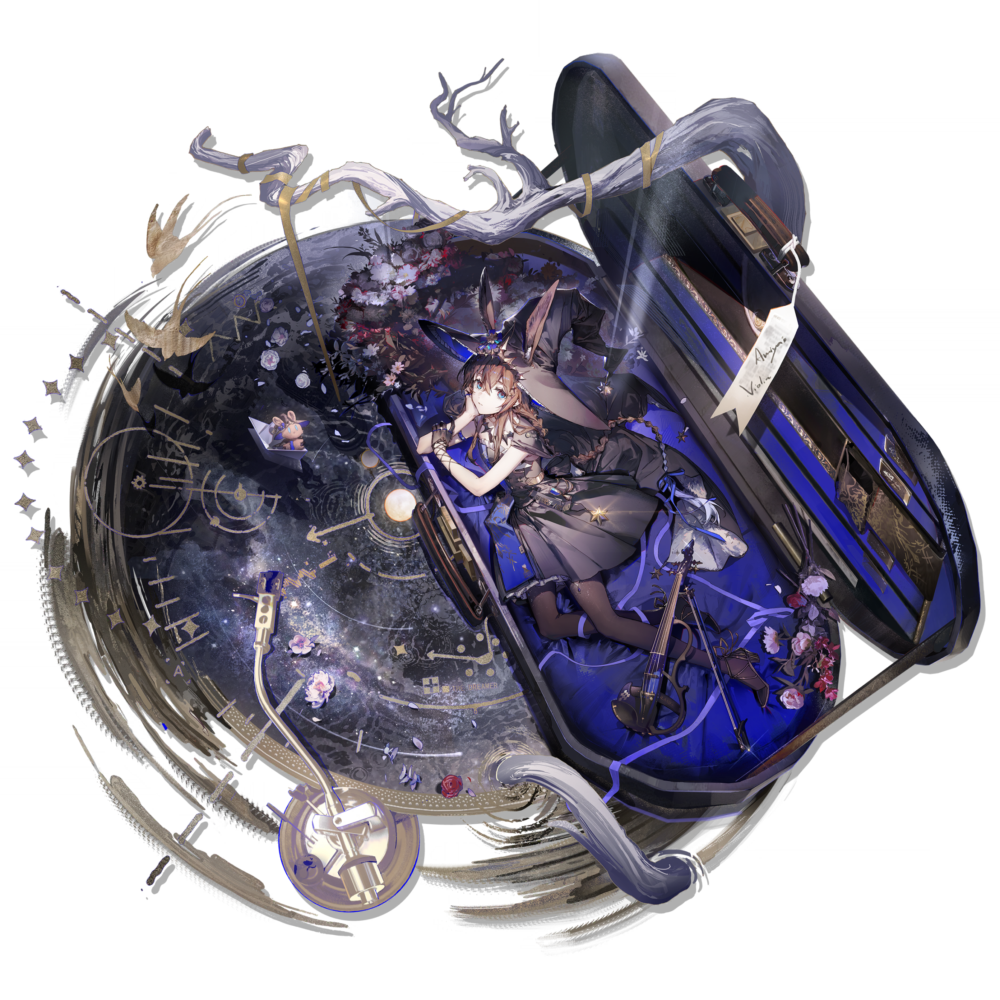

AMIYA
阿米娅 · 寰宇独奏
背景
互动
Ⅱ
☑
新的一页
今日计划
00:00
LOCAL TIME
你好，博士。
◉
⟳
QUICK NOTE
仅保存在此设备
0 / 12000
复制 ↗
DAILY DEPARTURE
LONE
STAR
天光 / OBSERVATORY
Guide
指南
Translate
谷歌翻译
网页搜索
Bing
Google
百度
Duck
搜索或输入网址
↗
· 搜索 ·
向未知出发
25
/ FOCUS /
25:00
▶ 开始专注
↺
+
添加网站
Pioneer Project
LINKS
网站收藏
Management
▸ HOME
HISTORY
APPEARANCE
搜索记录
个性设置
Mission
Pioneer Project
待办
≡
Weather
Pioneer Project
天气
≡
☀
—°
便签
返回主页
PIONEER PROJECT
今日待办
×
今日待办
＋
↵
清理已完成
设置天气城市
PIONEER PROJECT
×